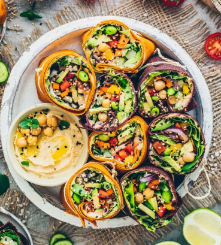

Classic Falafel Wrap
-
Homemade falafel balls with fresh greens,
tomatoes, cucumber, and tahini sauce wrapped in a whole
wheat tortilla.
-
Mediterranean Quinoa Wrap
-
Quinoa, roasted vegetables
(bell peppers, zucchini, and eggplant),
hummus, and mixed greens in a spinach tortilla.
-
Spicy BBQ Tofu Wrap
-
Grilled tofu marinated in spicy BBQ sauce,
shredded cabbage, avocado slices,
and cilantro-lime dressing in a sun-dried tomato tortilla.
-
Asian Sesame Tempeh Wrap
-
Marinated tempeh strips, crunchy Asian slaw
(cabbage, carrots, and bell peppers),
sesame seeds, and ginger-soy dressing in a sesame ginger wrap.
-
Southwest Black Bean Wrap
-
Smashed black beans, corn salsa
, diced tomatoes, lettuce, guacamole,
and chipotle mayo in a chili-infused tortilla.
-
Breakfast Burrito Wrap
-
Scrambled tofu, vegan cheese,
black beans, bell peppers,
onions, and salsa wrapped in a warm flour tortilla.
-
Sides:
-
Sweet Potato Fries
Kale Chips
Fresh Fruit Cup
Beverages:
-
-
Freshly Squeezed Juices
Iced Herbal Teas
Sparkling Fruit Infusions
-
Our Food


